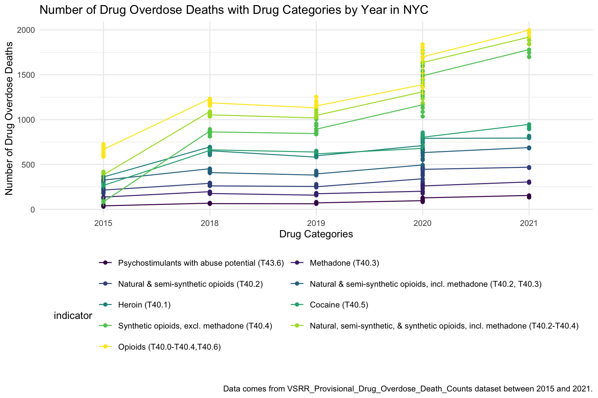
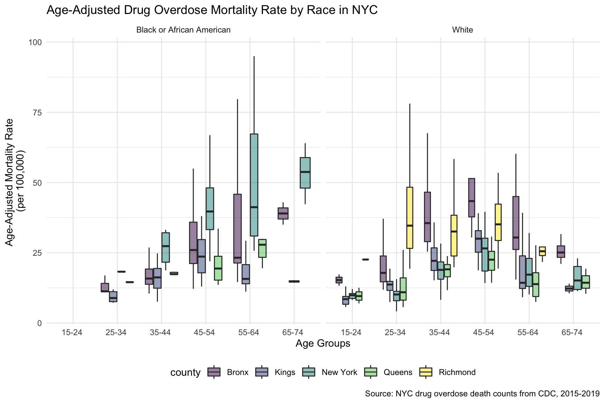
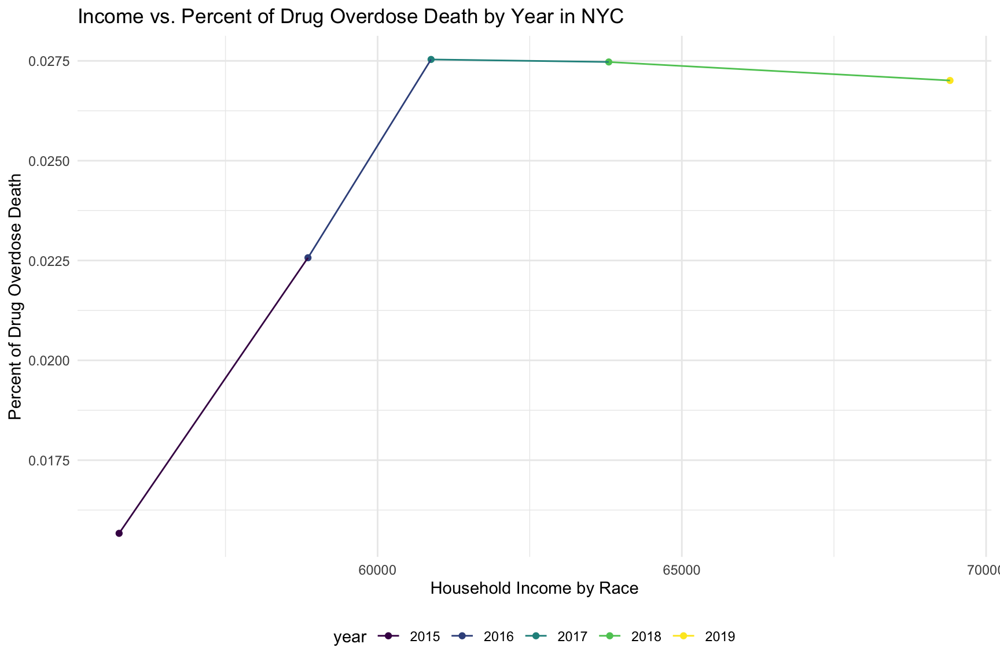
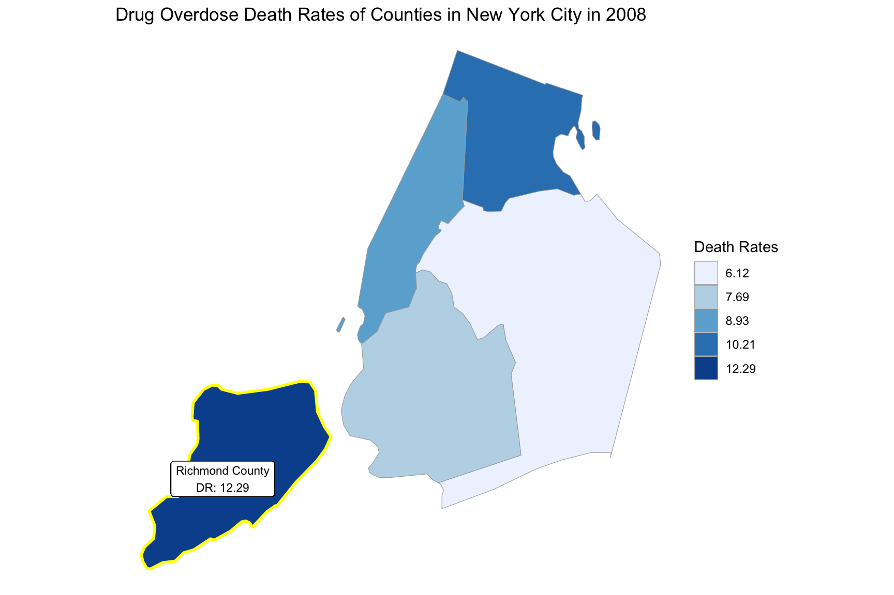

NY_data_analyzing
Yuxuan Chen
12/7/2021
Data cleaning
drug_overdose = read_csv("./data/VSRR_Provisional_Drug_Overdose_Death_Counts.csv") %>%
janitor::clean_names()
state_level = c(state.name[1:8], "District of Columbia", state.name[9:32],"New York City", state.name[33:50])
drug_overdose_52 =
drug_overdose %>%
filter(!(state_name %in% c("United States"))) %>%
relocate(state_name) %>%
mutate(month = factor(month, levels = month.name), # change month and year to factor
year = factor(year),
state_name = factor(state_name, levels = state_level)) %>%
arrange(state_name) %>%
group_by(state_name, year) %>%
mutate(month = sort(month))
nyc_df =
drug_overdose_52 %>%
filter(state_name == "New York City")
drug_percent_specified =
nyc_df %>%
ungroup() %>%
select(year, month, indicator, data_value) %>%
filter(indicator == "Percent with drugs specified")
# Missing data of death counts for specific drug types in year 2016, 2017
# Percent with drugs specified for each month from 2015-2021 are high enough, all above 98%Number of Drug Overdose Deaths by Drug Categories in NYC
nyc_df %>%
ungroup() %>%
filter(year %in% c("2016","2017")) %>%
select(year, month, indicator, data_value, predicted_value)## # A tibble: 288 × 5
## year month indicator data_value predicted_value
## <fct> <fct> <chr> <dbl> <dbl>
## 1 2016 January Natural & semi-synthetic opioids (T… NA NA
## 2 2016 January Natural, semi-synthetic, & syntheti… NA NA
## 3 2016 January Number of Drug Overdose Deaths 1118 1118
## 4 2016 January Number of Deaths 53516 NA
## 5 2016 January Cocaine (T40.5) NA NA
## 6 2016 January Methadone (T40.3) NA NA
## 7 2016 January Natural & semi-synthetic opioids, i… NA NA
## 8 2016 January Psychostimulants with abuse potenti… NA NA
## 9 2016 January Synthetic opioids, excl. methadone … NA NA
## 10 2016 January Heroin (T40.1) NA NA
## # … with 278 more rowssummarize_nyc_drug =
nyc_df %>%
ungroup() %>%
select(year, month, indicator, data_value) %>%
filter(!(indicator %in% c("Number of Deaths","Number of Drug Overdose Deaths","Percent with drugs specified"))) %>%
filter(!(year %in% c("2016","2017"))) %>%
mutate(indicator = as.factor(indicator)) %>%
mutate(
indicator = fct_reorder(indicator, data_value)
)
summarize_nyc_drug %>%
summarize(n = sum(data_value)) %>%
arrange(desc(n))## # A tibble: 1 × 1
## n
## <dbl>
## 1 276444summarize_nyc_drug %>%
ggplot(aes(x = indicator, y = data_value, fill = indicator)) +
geom_violin(alpha = 0.5) +
scale_x_discrete(labels = c("Psychostimulants \n with abuse potential \n (T43.6)", "Methadone \n (T40.3)", "Natural & \n semi-synthetic \n opioids \n (T40.2)", "Natural & semi-\n synthetic opioids, \n incl. methadone \n (T40.2, T40.3)", "Heroin \n (T40.1)", "Cocaine \n (T40.5)", "Synthetic opioids, \n excl. \n methadone \n (T40.4)", "Natural, \n semi-synthetic, & \n synthetic opioids, \n incl. methadone \n (T40.2-T40.4)", "Opioids \n (T40.0-T40.4,\n T40.6)")) +
guides(fill = guide_legend(nrow = 6, byrow = TRUE)) +
labs(
title = "Number of Drug Overdose Deaths by Drug Categories in NYC (2015 - 2021)",
x = "Drug Categories",
y = "Number of Drug Overdose Deaths",
caption = "Data comes from VSRR_Provisional_Drug_Overdose_Death_Counts dataset."
)Percent of Drug Overdose Deaths over Total Number of Deaths by Year in NYC:
nyc_drug_overdose_death_df =
nyc_df %>%
ungroup() %>%
select(year, month, indicator, data_value) %>%
filter(indicator %in% c("Number of Deaths", "Number of Drug Overdose Deaths")) %>%
pivot_wider(
names_from = indicator,
values_from = data_value
) %>%
janitor::clean_names() %>%
group_by(year, month) %>%
mutate(
percent_overdose_death = number_of_drug_overdose_deaths / number_of_deaths
)
nyc_drug_overdose_death_df %>%
ungroup() %>%
ggplot(aes(x = month, y = percent_overdose_death, color = year)) +
geom_point() +
geom_line(aes(group = year)) +
labs(
title = "Percent of Drug Overdose Deaths over Total Number of Deaths by Year in NYC",
x = "Months",
y = "Percent of Drug Overdose Deaths",
caption = "Data comes from VSRR_Provisional_Drug_Overdose_Death_Counts dataset from 2015 to 2021)."
)nyc_drug_overdose_death_df %>%
ungroup() %>%
ggplot(aes(x = month, y = percent_overdose_death, group = NA)) +
geom_point() +
geom_line() +
facet_grid(.~ year) +
labs(
title = "Percent of Drug Overdose Deaths over Total Number of Deaths by Year in NYC",
x = "Months",
y = "Percent of Drug Overdose Deaths",
caption = "Data comes from VSRR_Provisional_Drug_Overdose_Death_Counts dataset from 2015 to 2021."
) +
theme(axis.text.x = element_text(angle = 90, hjust = 1)) Number of Drug Overdose Deaths with Drug Categories by Year in NYC
summarize_nyc_drug %>%
ggplot(aes(x = year, y = data_value, color = indicator)) +
geom_point() +
geom_line(aes(group = indicator)) +
scale_color_viridis(discrete = TRUE, labels = c("Psychostimulants with abuse potential (T43.6)", "Methadone (T40.3)", "Natural & semi-synthetic opioids (T40.2)", "Natural & semi-synthetic opioids, incl. methadone (T40.2, T40.3)", "Heroin (T40.1)", "Cocaine (T40.5)", "Synthetic opioids, excl. methadone (T40.4)", "Natural, semi-synthetic, & synthetic opioids, incl. methadone (T40.2-T40.4)", "Opioids (T40.0-T40.4,T40.6)")) +
guides(color = guide_legend(nrow = 6, byrow = TRUE)) +
labs(
title = "Number of Drug Overdose Deaths with Drug Categories by Year in NYC",
x = "Drug Categories",
y = "Number of Drug Overdose Deaths",
caption = "Data comes from VSRR_Provisional_Drug_Overdose_Death_Counts dataset between 2015 and 2021."
)
Median Household Income: New York vs. The U.S
ny_eco_df =
read_csv("./data/median_household_income_ny.csv") %>%
janitor::clean_names() %>%
select(year, household_income_by_race, household_income_by_race_moe, geography) %>%
filter(year >= "2015",
!(geography %in% c("New York-Newark-Jersey City, NY-NJ-PA", "New York"))) %>%
mutate(
geography = str_replace(geography, "New York, NY", "New York City"),
geography = str_replace(geography, ", NY", ""),
year = factor(year))
ny_eco_df %>%
mutate(text_label = str_c("Year: ", year, "\nMedian Household Income: $", household_income_by_race,
"\nMargin of error: ± $", household_income_by_race_moe)) %>%
plot_ly(
x = ~year, y = ~household_income_by_race, color = ~geography, text = ~text_label,
alpha = 0.5, type = "scatter", mode = "markers+lines", colors = "viridis",error_y = ~list(array = household_income_by_race_moe)) %>%
layout(
title = "Median Household Income: New York vs. The U.S",
xaxis = list(title = "Year"),
yaxis = list(title = "Median Household Income"))Income vs. Percent of Drug Overdose Death by Year in NYC
income_drug_df_ny =
nyc_drug_overdose_death_df %>%
ungroup() %>%
group_by(year) %>%
summarize(overdose_death_rate = sum(number_of_drug_overdose_deaths)/sum(number_of_deaths)) %>%
inner_join(., ny_eco_df %>% filter(geography %in% "New York City"))
income_drug_df_ny %>%
ggplot(aes(x = household_income_by_race, y = overdose_death_rate, group = NA, color = year)) +
geom_point() +
geom_line() +
labs(
title = "Income vs. Percent of Drug Overdose Death by Year in NYC",
x = "Household Income by Race",
y = "Percent of Drug Overdose Death"
)
Map of NYC Counties Drug Overdose Deathrate Change, 5-yr interval
ny_county_df =
read_csv("./data/NCHS_-_Drug_Poisoning_Mortality_by_County__United_States.csv") %>%
janitor::clean_names() %>%
filter(state %in% "New York") %>%
select(year, county, population, model_based_death_rate) %>%
rename(death_rate = model_based_death_rate) %>%
mutate(
county = str_replace(county, "County, NY", "")) %>%
mutate(year = factor(year),
county = str_to_lower(county)) %>%
filter(str_detect(county, "bronx|queens|kings|new york|richmond")) %>%
mutate(county = str_replace(county, " $", "")) %>%
relocate(county)
ny_county_df## # A tibble: 80 × 4
## county year population death_rate
## <chr> <fct> <dbl> <dbl>
## 1 bronx 2003 1362373 10.2
## 2 bronx 2004 1358963 9.94
## 3 bronx 2005 1351736 10.7
## 4 bronx 2006 1348164 13.6
## 5 bronx 2007 1354056 12.4
## 6 bronx 2008 1363488 10.2
## 7 bronx 2009 1376261 10.0
## 8 bronx 2010 1384603 8.69
## 9 bronx 2011 1397366 10.0
## 10 bronx 2012 1411715 11.8
## # … with 70 more rowsdata(county.fips)
nyc_fip = county.fips %>%
filter(str_detect(polyname, "new york")) %>%
mutate(
polyname = str_replace(polyname, "new york,", "")) %>%
filter(str_detect(polyname, "bronx|queens|kings|new york|richmond")) %>%
rename(county = polyname) %>%
as.tibble()
ny_county_df = left_join(ny_county_df,nyc_fip, by = "county")highlight_county = function(county_fips)
{
data(county.map, package="choroplethrMaps", envir=environment())
df = county.map[county.map$region %in% county_fips, ]
geom_polygon(data=df, aes(long, lat, group = group), color = "yellow", fill = NA, size = 1)
}
add_text_county = function(county_fips){
data(county.map, package="choroplethrMaps", envir=environment())
df = county.map[county.map$region %in% county_fips, ]
#geom_text(data=df, aes(mean(long), mean(lat), label = paste0(str_to_title(pull(county_fips, county)), " County\n", pull(county_fips, death_rate))), color = "white")
geom_label(data=df, aes(mean(long), mean(lat), label = paste0(str_to_title(pull(county_fips, county)), " County\nDR: ", round(pull(county_fips, death_rate),2))), fill = "white", size = 3)
}2003
year_select = 2003
start_county_df = ny_county_df %>%
select(county, year, death_rate, fips) %>%
filter(year == year_select)
start_deathrate_df =
start_county_df %>%
rename(region = fips,
value = death_rate) %>%
select(value, region)
county_choropleth(start_deathrate_df, title = "Drug Overdose Death Rates of Counties in New York City in 2003",
legend = "Death Rates",
county_zoom = start_deathrate_df$region) +
highlight_county(start_county_df[which.max(pull(start_county_df, death_rate)),]) +
add_text_county(start_county_df[which.max(pull(start_county_df, death_rate)),])
- Number of Drug Overdose Deaths with Drug Categories by Year in NYC

- Median Household Income: New York vs. The U.S
- Income vs. Percent of Drug Overdose Death by Year in NYC
2008
year_select = 2008
start_county_df = ny_county_df %>%
select(county, year, death_rate, fips) %>%
filter(year == year_select)
start_deathrate_df =
start_county_df %>%
rename(region = fips,
value = death_rate) %>%
select(value, region)
county_choropleth(start_deathrate_df, title = "Drug Overdose Death Rates of Counties in New York City in 2008",
legend = "Death Rates",
county_zoom = start_deathrate_df$region) +
highlight_county(start_county_df[which.max(pull(start_county_df, death_rate)),]) +
add_text_county(start_county_df[which.max(pull(start_county_df, death_rate)),])
2013
year_select = 2013
start_county_df = ny_county_df %>%
select(county, year, death_rate, fips) %>%
filter(year == year_select)
start_deathrate_df =
start_county_df %>%
rename(region = fips,
value = death_rate) %>%
select(value, region)
county_choropleth(start_deathrate_df, title = "Drug Overdose Death Rates of Counties in New York City in 2013",
legend = "Death Rates",
county_zoom = start_deathrate_df$region) +
highlight_county(start_county_df[which.max(pull(start_county_df, death_rate)),]) +
add_text_county(start_county_df[which.max(pull(start_county_df, death_rate)),])